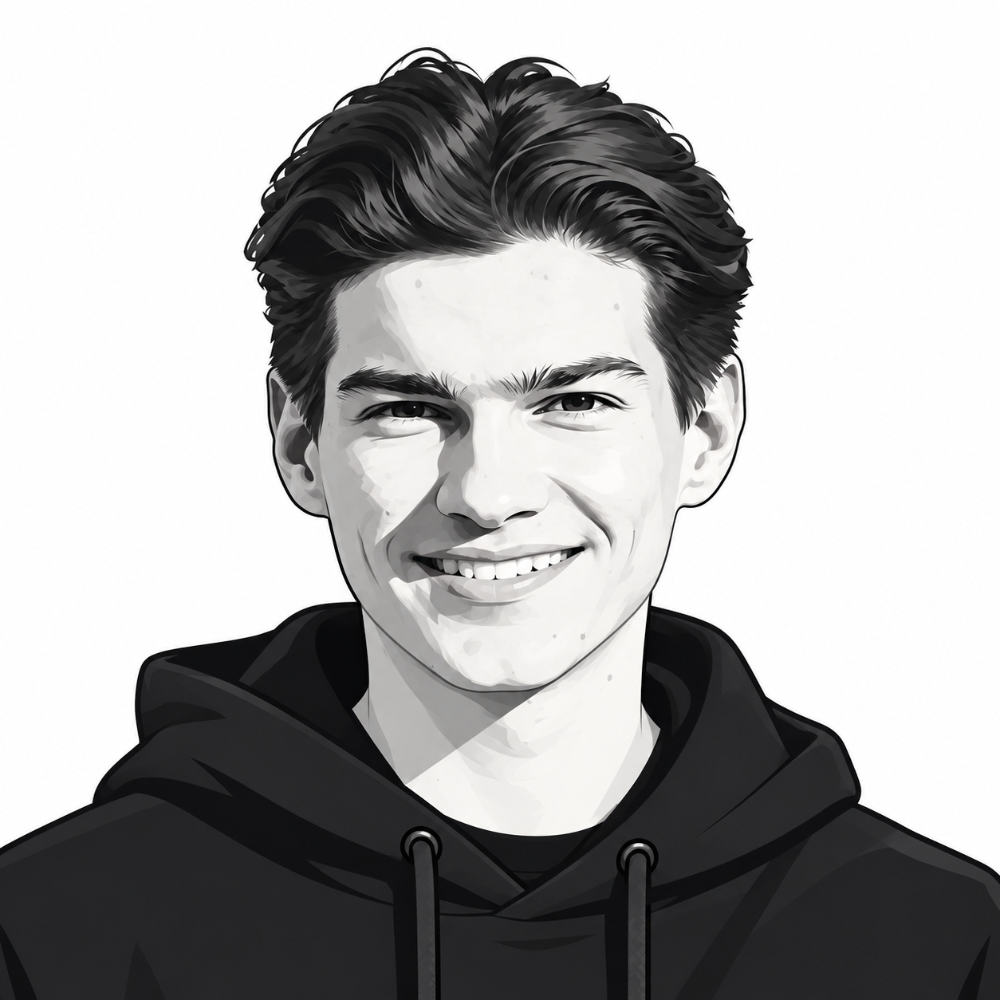

SOFTWARE · ROBOTICS · SIDE PROJECTS
Curiosity, turned
into things that work.

I'm Manuel. I build software, explore robotics, and enjoy figuring out how things fit together. This is a collection of my projects.
Selected work
A FEW THINGS I'VE BEEN WORKING ON01 / SOFTWARE
Pi-Chat
A local browser interface for Pi, bringing persistent AI coding sessions, tools, and extensions into one workspace.
A LITTLE ABOUT ME
Curious by default.
Hands-on by choice.
This preview focuses on the hero portrait placement. Project and About content below are placeholders.